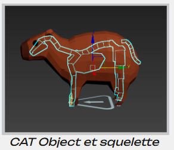
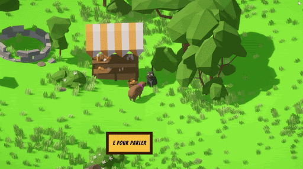

Handicapy
Vous avez été un mauvais capybara : il est temps de vous racheter ! Dans Handicapy, vous aidez des capybaras en situation de handicap et affrontez des pécaris pour terminer l’aventure.
Nous avons créé ce jeu en 2025. Il s’agissait du premier projet Unity important pour une partie de l’équipe, réalisé dans le cadre du BUT Informatique Graphique.


Le principe du jeu
Le joueur incarne un capybara qui doit aider les personnages rencontrés dans un monde en vue isométrique.
Pour progresser, il apprend à connaître les capybaras, absorbe leurs handicaps et continue l’aventure avec de nouvelles contraintes.
Gameplay
Les handicaps sont appliqués au joueur de manière aléatoire pendant une durée déterminée. Ils modifient les déplacements, les actions ou encore la gestion des munitions.
Le joueur dispose de trois munitions, d’une attaque au corps-à-corps et de trois vies. Il doit vaincre ses ennemis, les pécaris.
Commandes
- ZQSD ou flèches directionnelles : se déplacer
- Souris : orienter le capybara
- E : interagir
- H : prendre un handicap
- Tab : afficher la carte et le menu
Astuce : l’attaque au corps-à-corps permet de récupérer une orange.
Mes Missions
- Développement des mécaniques liées aux handicaps
- Création des dialogues et personnalités des PNJ
- Animation des personnages (3ds Max, Blender)
- Développement des zones d’interaction pour les dialogues et leur UI

.gif)

Compétences développées
- Techniques : Unity, C#, animation 3D, UI design
- Humaines : travail en équipe, communication, créativité, sensibilité aux enjeux d’inclusion
Retour d’expérience
Le principal défi était d’intégrer les handicaps de manière cohérente, respectueuse et engageante. Nous avons réalisé plusieurs itérations pour équilibrer le gameplay et éviter de caricaturer les situations.
Ce projet m’a permis de prendre conscience de l’importance de l’inclusivité dans le game design, et de développer des compétences en design narratif, et en techniques de programmation.